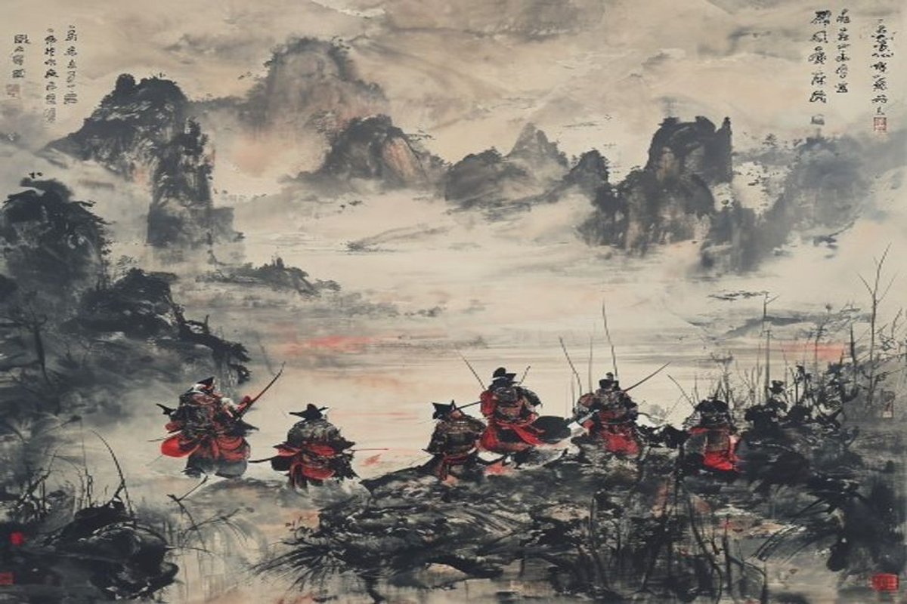

替天行道
About the Novel小说简介
A Yuan-Ming dynasty writer. Some scholars also attribute parts to his student Luo Guanzhong.元末明初作家，部分学者认为其学生罗贯中也参与了创作。
Written during the late Yuan or early Ming dynasty, drawing from historical accounts of the Song dynasty rebellion.成书于元末明初，取材于宋代起义的历史记载。
The Northern Song dynasty, centered on Liangshan Marsh where 108 outlaws gather.北宋时期，以梁山泊为中心，一百零八位好汉聚集于此。
Available in 70, 100, or 120 chapter versions.有七十回、一百回、一百二十回等版本。
Why It Matters为何重要
The first Chinese novel in vernacular, establishing the "outlaw novel" genre. It tells of 108 outlaws who gather at Liangshan Marsh to fight corruption.中国第一部白话小说，开创了"英雄传奇"的先河。讲述一百零八位好汉聚集梁山泊反抗腐败的故事。
替天行道
— The novel's motto— 小说主旨The novel profoundly influenced Japanese literature, manga, and anime. It inspired Konami's "Suikoden" video game series.这部小说深刻影响了日本文学、漫画和动画。启发了科乐美的"水浒传"系列游戏。
Timeless Appeal永恒的魅力
The celebration of rebellion against corrupt authority resonates across time. The 108 heroes represent a cross-section of Song society.对腐败权威的反抗精神跨越时空。一百零八位好汉代表了宋代社会的各个阶层。
Adapted into Peking opera, martial arts films, television, manga, anime, and video games.被改编为京剧、武侠电影、电视、漫画、动画和电子游戏。
Heroes of Liangshan梁山好汉
The Timely Rain及时雨
Leader of the 108 outlaws, known for loyalty.一百零八位好汉之首，以忠义闻名。
The Pilgrim行者
Famous for killing a tiger with bare hands.赤手空拳打死猛虎的英雄。
The Flowery Monk花和尚
Former officer turned monk, known for incredible strength.从军官变为和尚，以力大无穷著称。
The Panther豹子头
Skilled fighter forced to join outlaws after being framed.武艺高强的教头，被陷害后被迫上梁山。